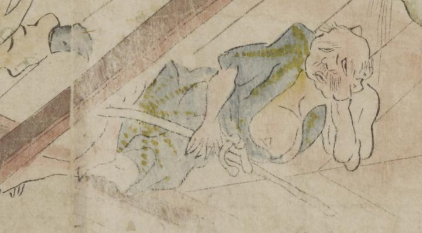

頭頂に1本角を生やした、垂れ目の鬼。頭頂部は禿げ、口ひげを生やし、頬がたるんでいる。柄の入った青色の着物を着けて、胸元をはだけて膨らんだ腹を出している。横たわって、左ひじを突き、右手に棒のようなものを持っている。
著作者：坂本弥一郎徳定／出典：親書誌：U426_nichibunken_0080：伊吹山酒呑童子絵巻；イブキヤマシュテンドウジエマキ／日付：2007／資源識別子：U426_nichibunken_0080_0008_0002
Copyright (c)2010- International Research Center for Japanese Studies, Kyoto, Japan. All rights reserved.